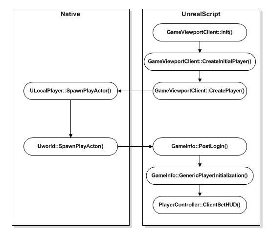
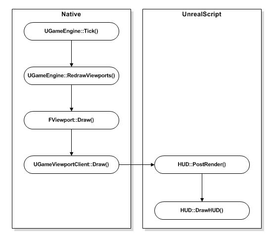
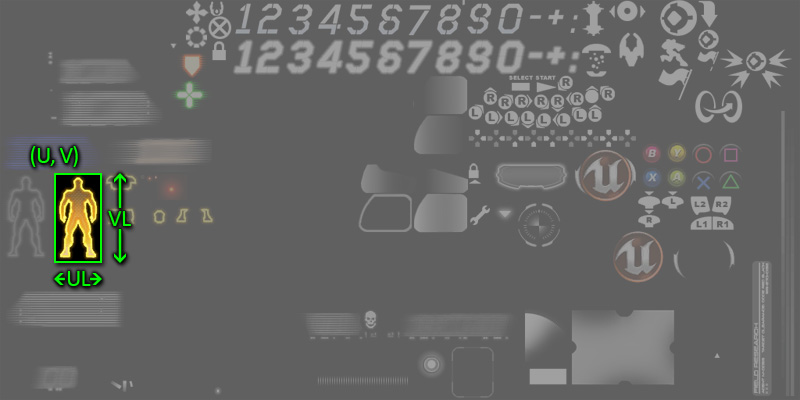

HUD ?�크?�컬 가?�드
문서 변경내?? Jeff Wilson ?�성. ?�성�?/a> 번역.
개요
HUD(Heads Up Display, 머리?�에 ?�는 ?�스?�레?????�레???�중 ?�레?�어?�게 게임 ?�태???�???�보�??�고 빠르�??�리?????�용?�니?? HUD?�는 ?�레?�어???�재 체력, ?�고/?�용?�고 ?�는 무기/?�이?? ?�른 ?�레?�어/?�이?�의 ?�치�??��??�는 ?�드 �? ?�레?�어???�수 ?�과 같�? ?�보?�이 ?�함?????�습?�다. ?�러???�보???�드 ?�에??그래?�과 ?�스?��? 그려 ?�달??�????�습?�다.
몇몇 게임??HUD???�반?�인 �?보다 ?�씬 복잡?????�습?�다. ?�부분의 FPS 게임?�서 HUD??꽤나 간단?�니?? ?�레?�어???�드 ?�야�?가리�? ?�는 ?�에?????�에 ???�아�????�는 ?�보�??�공??주는 ?��??�니?? 보통 ?�이?��? 빠르�?찰나???�간?�로 ?�과 ?��? 갈리??FPS 게임?�서??중요?�다 ?�겠?�니?? RPG??경우, HUD???�순??HUD?�서 그치�?보다??거의 ?��? ?�터?�이???��??�로 ?�씬 복잡??지�??�니??
물론 HUD???�떤 ?�보�??�함?�킬 지???�적?�로 ?�장??가??가?????�렸?�니 �???간의 경계??모호?�질 ???��?�? 그에 ?�?�서???�외�??�겠?�니?? ?�기?�는 HUD ?�작 ?�내?�로?? 그�? ?�해 ?�리???�진 3?�서 ?�용가?�한 ?�수?�을 ?�세???�아보는 ?�도�??�겠?�니??
HUD ?�형
?�리???�진 3?�서 ?�용?????�는 기본?�인 HUD ?�형?� ???�습?�다. �??��?:
- Canvas - HUD 그래?�을 그리�??�해 캔버?��? ?�용?�니??
- Scaleform GFx - HUD 그래??�?메뉴 ?�시�??�해 ?��??�폼 GFx ?�합???�용?�니??
???��?지 HUD ?�형?� ?�호 배제?�이지(?�나�??�면 ?�른 것을 못쓰지) ?�습?�다. ?�요???�라 ?�을 ?�어 ???�도 ?�습?�다.
캔버??HUD
Canvas(캔버?? ?�래?�에???�면??그래?�과 ?�스?��? 그리?????�요???�이 ?��? ?�공?�니?? ?�리???�진?�로 ?�작???�많?� 게임???�용?�어 ?�으�? ?�부분의 게임?�서 ?�용?????�는 ?�결책이기도 ?�니?? ??방법?� 박스 ?�력 처리???�니메이?�같?� 것에???�절?��? ?�기?? 메뉴??복잡???��? ?�터?�이???�작?�는 ?�합?��? ?�습?�다.
HUD ?�작???�한 캔버???�래???�용�??�세 ?�보?? 캔버???�크?�컬 가?�드 ?�이지�?참고??주시�?바랍?�다.
?��??�폼 GFx HUD
?�리???�진 3 ???�합??Scaleform(?��??�폼) GFx ??게임??HUD ?�작?�도, 메뉴???��? ?�터?�이???�작?�도 ?�합?�니?? ?�의 모든 ?�소가 ?��? ?�함???�래?�로 ?�작?�게 ?�는?? ?��? ?�해 ?�로그래머�? ?�직 코드로만 배치?�던 ?�터?�이??구성 ?�업???�자?�너가 ?�?�할 ???�게 ??줍니??
HUD ?�작???�한 ?��??�폼 GFx ?�용�??�세 ?�보?? ?��??�폼 ?�크?�컬 가?�드 ?�이지�?참고??주시�?바랍?�다.
HUD ?�래?�는 ?�면?�에 그릴 것�? 무엇?��?, ?�시???�보???�득 �?처리???�요??로직?� 무엇?��?�?관?�하???�래?�입?�다. �??�레?�어??게임 뷰포?��? 초기?�될 ???�성?�는 HUD ?�래????�??�브?�래?????�스?�스�?갖습?�다. ?�레?�어??HUD ?�스?�스 ?�성 ?�체 ?�로?�스???�래?� 같습?�다:

�??�데?�트마다 ?�레?�어??HUD??�?
PostRender() ?�벤?��? ?�행?�키?�데, ?�는 HUD ?�용???�면???�시 그리???�로?�스�?발동?�킵?�다. �??�어
PostRender() ?�벤?�는 주요 그리�??�수??
DrawHUD() ?�수�??�출?�니?? �??�데?�트???�??그리�??�벤?�의 ?�서???�래?� 같습?�다:

�???
DrawHUD() ?�수??HUD??개별 ?�소�??�면??그리�??�해 좀 ???�화??그리�??�수�??�출?�니?? ?��? ?�어 ?�드 맵과 ?�른 ?�레?�어 ?�는 주요 지???�도만을 그리??
DrawMinimap() ?�수 ?�도가 ?�겠?�니??
HUD ?�성
Debug (?�버�?
- bShowDebugInfo (?�버�??�보 ?�시) - 참이�??�재 뷰�?겟의 ?�버�??�성???�면 ?�에 ?�시?�니??
- DebugDisplay (?�버�??�스?�레?? -
bShowDebugInfo 가 참일 ???�재 뷰�?�??�터?�으�??�시???�버�??�보�?지?�하??문자??배열?�니?? 베이???�진 ?�?�에??"AI", "physics", "weapon", "net", "camera", "collision" ???�함?�니??
Display (?�스?�레??
- Canvas (캔버?? - HUD ?�에 그릴 캔버???�브?�트?�니?? �? �??�레?�마???�로??캔버?��? 주어지므�? HUD::PostRender() ?�벤?��? ?�해?�만 그리??��?? 캔버???�래???�용법에 ?�???�세 ?�보??캔버???�크?�컬 가?�드 ?�이지�?참고??주시�?바랍?�다.
- PlayerOwner (?�레?�어 ?�너) - HUD�??�유?�는 PlayerController�?참조?�니?? ?��? ?�면 로컬 PlayerController.
- PostRenderedActors (?�후 ?�더링되???�터) - HUD ?�버?�이�?그리�??�해 그의
NativePostRenderFor() �?PostRenderFor() ?�수�??�출?�야 ?�는 ?�터 배열?�니??
- WhiteColor/GreenColor/RedColor (?��???초록??빨간?? - ?�앙, 초록, 빨강 ??변?�의 미리 ?�정(?�리???�니??
- bShowHUD (HUD ?�시) - 참이�?HUD가 ?�시?�니??
- bShowScores (?�수 ?�시) - 참이�??�수?�이 ?�시?�니??
- bShowBadConnectionAlert (?�성 ?�결 경고 ?�시) - 참이�??�성 ?�결 ?��?가 HUD???��??�니?? ?�과 ?�킷 ?�실??기반?�로 ?�이?�브 코드???�정?�어 ?�습?�다.
- RenderDelta (?�더 경과?�간) - 지???�데?�트 ?�후 경과??초단???�간?�니??
- LastHUDRenderTime (지??HUD ?�더 ?�간) -
RenderDelta 계산???�용??지??�??�더�??�간?�니??
Messages (메시지)
- ConsoleMessages (콘솔 메시지) - ?��???메시지 배열?�니??
- ConsoleColor (콘솔 ?? - 콘솔 메시지�??��??????�용???�입?�다.
- ConsoleMessageCount (콘솔 메시지 ?? - 콘솔 메시지 배열???��??�킬 콘솔 메시지??최�? ?�입?�다.
- ConsoleFontSize (콘솔 ?�트 ?�기) -
- MessageFontOffset (메시지 ?�트 ?�프?? - ?�용???�트�?결정????로컬 메시지(LocalMessage)???�트 ?�기???�용???�프??값입?�다.
- MaxHUDAreaMessageCount (최�? HUD ?�역 메시지 ?? - ?��???로컬 메시지??최�? ?�입?�다.
- LocalMessages (로컬 메시지) - ?��???로컬 메시지 배열?�니??
- ConsoleMessagePos[X/Y] (콘솔 메시지 ?�치 [X/Y]) - 콘솔 메시지�?그릴 ?�면?�의 가�??�로 ?�치?�니??
- KismetTextInfo (?�즈�??�스???�보) - ?��????�즈�?DrawText 메시지 배열?�니??
- bMessageBeep (메시지 ?�소�? - 참이�?콘솔???�로 메시지가 ?��????�마?????�리가 ?�니??
Viewport (뷰포??
- HUDCanvasScale (HUD 캔버???��??? - (TV ?�으�? ?�용???�면-공간???�으�? [0,1] 범위?�니??
- Size[X/Y] (?�기[X/Y]) - 뷰프?�의 가�??�로 ?�기�? ?��? ?�위?�니??
- Center[X/Y] (중심[X/Y]) - 뷰포??중심??가�??�로 ?�치?�니??
- Ratio[X/Y] (비율[X/Y]) - 기본 ?�상??1024x768 ???�???�재 뷰포?�의 가�??�로 ?�기 비율?�니??
HUD ?�수
Debug
- ShowDebug [DebugType] - ?�레?�어???�재 뷰�?�?ViewTarget) ?�성 ?�시 ?��??�니??
- DebugType - ?�시?�거???�길 ?�성?�니?? 베이???�진??지?�하??값에??"AI", "physics", "weapon", "net", "camera", "collision" ???�함?�니??
- ShowDisplayDebug [DebugType] - 지?�된 ?�버�??�보가 ?�재 ?��??�도�??�정?�었?��?�??�합?�다. ?��? ?�자�?
DebugDisplay 배열???�는 것입?�다.
- DebugType - 검?�할 ?�성?�니?? 베이???�진??지?�하??값에??"AI", "physics", "weapon", "net", "camera", "collision" ???�함?�니??
- ShowDebugInfo [out_YL] [out_YPos] - HUD ?�의 기본 ?�버�??�더링을 ?�기 ?�한 진입?�입?�다. "showdebug" 콘솔 명령???�해 ?�성??�??�어?�니?? 게임�?커스?� ?�버그�? ?��??�기 ?�해 ??��?????�습?�다.
- out_YL - ?�재 ?�트???�이?�니??
- out_YPos - 캔버???�의 ?�로 ?�치?�니?? ?�음 ?�버�?줄에 ?�???�스??그리�??�치??
out_YPos + out_YL= ???�니??
- DrawRoute [Target] - 뷰�?�? �?봇의 ?�재 루트???�???�버�??�보�?그립?�다.
- Target - 루트 ?�보�?그릴 ??�???가리킵?�다.
Display
- ToggleHUD -
bShowHUD 변?��? ?�해 HUD???�시?��?�??��??�는 ?�행 ?�수?�니??
- ShowHUD -
ToggleHUD() ?�수�??�출?�여 HUD???�시?��?�??��??�는 ?�행 ?�수?�니??
- ShowScores -
SetShowScores() ?�수�??�출?�여 게임???�수???�시�??��??�는 ?�행 ?�수?�니??
- SetShowScores [bNewValue] -
bShowScores 변?��? ?�해 게임???�수?�의 ?�시?��?�??�정?�는 ?�행 ?�수?�니??
- bNewValue -
bShowScores 변?�에 ?�???�로??값입?�다.
- DisplayBadConnectionAlert - ?�성 ?�결 경고 메시지�?그리�??�한 ?�수 ?�막(stub)?�니?? ?�브?�래?�에???��? ??��?�야 ?�니??
Drawing
- PreCalcValues - Size[X/Y], Center[X/Y], Ratio[X/Y] 값들??계산?�여 채워 ?�습?�다.
- PostRender - HUD???�??메인 그리�??�수?�니?? ?�진??�??�레?�마???�출?�니??
- DrawHUD - 메인 게임 HUD 그리�??�수?�니?? ?�무 메시지 ?�전???�출?�니?? 게임-?�용 HUD 그리기�? 처리?�려�??�브?�래?�에???��? ??��?�야 ?�니??
- Draw2DLine [X1] [Y1] [X2] [Y2] [LineColor] - ?�면??2D 공간 ?�을 그립?�다.
- [X/Y]1 - ?�의 ?�작?�을 ?��?�??��??�는 가�??�로 ?�치?�니??
- [X/Y]2 - ?�의 종료?�을 ?��?�??��??�는 가�??�로 ?�치?�니??
- LineColor - ?�을 그릴 ???�용???�입?�다.
- Draw3DLine [Start] [End] [LineColor] - ?�면??3D 공간 ?�을 그립?�다.
- Start - ?�드 공간???�의 ?�작?�을 ?��??�는 벡터?�니??
- End - ?�드 공간???�의 종료?�을 ?��??�는 벡터?�니??
- LineColor - ?�을 그릴 ???�용???�입?�다.
- DrawText [Text] [Position] [TextFont] [FontScale] [TextColor] - ?�면???�스??문자?�을 그립?�다.
- Text - ?�면??그릴 문자?�입?�다.
- Position - ?�면?�에 ?�스?��? 그릴 가�??�로 (X Y) ?�치�??��?�??��??�는 Vector2D ?�니??
- TextFont - ?�스?��? 그리?????�용???�트?�니??
- FontScale - ?�스?�의 가�??�로 (X Y) ?��??�을 ?��??�는 Vector2D ?�니??
- TextColor - ?�면?�에 ?�스?��? 그릴 ???�용???�입?�다.
- DrawActorOverlays [Viewpoint] [ViewRotation] - ?�이?�브. ?�번 ?�에 ?�더링되�? PostRenderedActors 배열??추�????�터???�버?�이�?그립?�다.
- Viewpoint - ?�레?�어 카메?�의 ?�재 ?�치?�니??
- ViewRotation - ?�레?�어 카메?�의 ?�재 ?�전?�니??
- AddPostRenderedActor [A] -
PostRenderedActors 목록?�다 ?�터�?추�??�니??
- A - 배열??추�??�킬 ?�터�?가리킵?�다.
- RemovePostRenderedActor [A] -
PostRenderedActors 목록?�서 ?�터�??�거?�니??
- A - 배얼?�서 ?�거?�킬 ?�터�?가리킵?�다.
- GetFontSizeIndex [FontSize] - 주어�??�트 ?�기??맞는 ?�트�?반환?�니??
- FontSize - ?�트???�당?�는 ?�기?�니??
General
- PlayerOwnerDied - HUD ??
PlayerOwner 가 죽었?????�출?�는 ?�수 ?�막?�니?? ?�브?�래?�에?????�수�???��?�야 ?�니??
- OnLostFocusPause [bEnable] - 메인 창에 ?�커?��? ?��??��? ?�을 ??게임???�시?��? ?��??�니??
- bEnable - 참이�??�시?��?가 가?�합?�다. ?�니�?불�??�합?�다.
Messages
- ClearMessage [M] - 주어�?LocalizedMessage �?비웁?�다.
- M - 비울 LocalizedMessage �?가리킵?�다.
- Message [PRI] [Msg] [MsgType] [LifeTime] - 콘솔 메시지�??�로 추�??�기 ?�한 감싸�?wrapper) ?�수?�니??
AddConsoleMessage() �??�출?�니??
- PRI - 메시지�??�송?�는 PlayerReplicationInfo (?�레?�어 복제 ?�보)�?가리킵?�다.
- Msg - 메시지 ?�스?�입?�다.
- MsgType - 메시지??종류?�니?? ?? 'Say', 'TeamSay' ??
- LifeTime - ?�션. 메시지�??��???기간?�로, �??�위?�니??
- AddConsoleMessage [M] [InMessageClass] [PRI] [LifeTime] - ?��???콘솔 메시지�??�로 추�??�니??
- M - 메시지 ?�스?�입?�다.
- InMessageClass - ?�로??메시지???�래??(LocalMessage ?�는 ?�브?�래???�니??
- PRI - 메시지??관계된 ?�레?�어??PlayerReplicationInfo (?�레?�어 복제 ?�보)�?가리킵?�다.
- LifeTime - ?�션. 메시지�??��???기간?�로, �??�위?�니??
- DisplayConsoleMessages - 계류중인 ConsoleMessage �??�면??그립?�다.
- LocalizedMessage [InMessageClass] [RelatedPRI_1] [RelatedPRI_2] [CriticalString] [Switch] [Position] [LifeTime] [FontSize] [DrawColor] [OptionalObject] - ?�로???��???LocalMessage �?추�??�기 ?�한 감싸�?wrapper) ?�수?�니??
AddLocalizedMessage() �??�출?�니?? 메시지 ?�래?�의 bIsSpecial ?�성??거짓??경우 콘솔 메시지로써 메시지�?추�??�기???�니??
- InMessageClass - ?�로??메시지???�래??(LocalMessage ?�는 ?�브?�래???�니??
- RelatedPRI_1 - 메시지??관?�된 ?�레?�어??�?PlayerReplicationInfo (?�레?�어 복제 ?�보)�?가리킵?�다. 메시지???�래?�에??PRI가 ?�용?�는 방법???�의?�니??
- RelatedPRI_2 - 메시지??관?�된 ?�레?�어???�째 PlayerReplicationInfo (?�레?�어 복제 ?�보)�?가리킵?�다. 메시지???�래?�에??PRI가 ?�용?�는 방법???�의?�니??
- CriticalString - 메시지???�스?�입?�다.
- Switch - 메시지 ?�위치입?�다. 메시지???�래?��? ?�위�??�용법을 결정?�니??
- Position - ?�면 ??메시지???�로 ?�치?�니??
- LifeTime - 메시지�??��???기간?�로, �??�위?�니??
- FontSize - 메시지�??��??�는 ???�용???�트 ?�기?�니?? 메시지�??��??�는 ???�용???�트�?구하�??�해
MessageFontOffset 만큼 ?�프?�시�?GetFontSizeIndex() ???�달??것입?�다.
- DrawColor - 메시지�??��??�는 ???�용???�입?�다.
- OptionalObject - ?�션. 메시지???�결???�브?�트�?가리킵?�다. 메시지???�래?�에??�??�브?�트???�용법을 ?�의?�니??
- AddLocalizedMessage [Index] [InMessageClass] [CriticalString] [Switch] [Position] [LifeTime] [FontSize] [DrawColor] [MessageCount] [OptionalObject] - ?�제 메시지�?
LocalMessages 배열??추�??�니??
- Index - ?�로??메시지�??�을
LocalMessages 배열 ?�으로의 ?�덱?�입?�다.
- InMessageClass - ?�로??메시지???�래??(LocalMessage ?�는 ?�브?�래???�니??
- CriticalString - 메시지???�스?�입?�다.
- Switch - 메시지 ?�위치입?�다. 메시지???�래?�에???�위�??�용법이 결정?�니??
- Position - ?�면 ?�의 메시지 가�??�치?�니??
- LifeTime - 메시지�??��??�는 기간?�로, �??�위?�니??
- FontSize - 메시지�??��??�는 ???�용???�트???�기?�니?? 메시지�??��??�는 ???�용???�트�?구하�??�해
MessageFontOffset 만큼 ?�프?�시�?GetFontSizeIndex() �??�달?�킨 것입?�다.
- DrawColor - 메시지�??��??�는 ???�용???�입?�다.
- MessageCount - ?�션. ?�재
LocalMessages 배열???�는 메시지?????�니??
- OptionalObject - ?�션. 메시지???�결???�브?�트�?가리킵?�다. 메시지???�래?�에???�브?�트가 ?�용?�는 방법???�의?�니??
- GetScreenCoords [PosY] [ScreenX] [ScreenY] [InMessage] - LocalMessage �?그릴 ?�면?�의 ?�치�?계산?�니??
- PosY - 메시지???�로 ?�치?�니??
- ScreenX - 출력. 가�??�치�??��? ?�위�?출력?�니??
- ScreenY - 출력. ?�로 ?�치�??��? ?�위�?출력?�니??
- InMessage - 출력. ?�면 ?�치�?구하?????�용??메시지?�니??
- DrawMessage [i] [PosY] [DX] [DY] - LocalMessage�??��??�기 ?�한 구성 �?메시지�??��??�기 ?�한
DrawMessageText() ?�출???�행?�니??
- i - ?��???메시지??
LocalMessages 배열 ?�으로의 ?�덱?�입?�다.
- PosY - ?�면 ?�의 메시지 ?�로 ?�치?�니??
- DX - 출력. 메시지 ?�스?�의 ??�� 출력?�니??
- DY - 출력. 메시지 ?�스?�의 ?�이�?출력?�니??
- DrawMessageText [LocalMessage] [ScreenX] [ScreenY] - ?�면?�다 LocalMessage ???�스?��? 그립?�다.
- LocalMessage - ?�스?��? ?��???LocalMessage ?�니??
- ScreenX - 메시지 ?�스?��? 그릴 ?�면 ?�의 가�??�치�? ?��? ?�위?�니??
- ScreenY - 메시지 ?�스?��? 그릴 ?�면 ?�의 ?�로 ?�치�? ?��? ?�위?�니??
- DisplayLocalMessages - LocalMessages ???�이?�웃???�행???�음 ?��??�니??
- DisplayKismetMessages - 계류중인 ?�즈�?DrawText 메시지�?모두 ?��??�니??
MobileHUD
MobileHUD ?�래?�는 베이??HUD ?�래?�로부???�장???�음, 모바???�바?�스??HUD ?�현???�수?�인 (?�치 콘트롤같?�) 부가 HUD 부분용 ?�수?�을 추�???것입?�다. 모바???�바?�스?�으�?게임??배포?�려??경우, MobileHUD ?�래?�나 �??�브?�래?�에?��???HUD �??�장??가???�니??
MobileHUD ?�성
Controls (콘트�?
- JoystickBackground (조이?�틱 배경) - 조이?�틱 ?�소??배경 그래?�을 ?�함?�는 ?�스처입?�다.
- JoystickBackgroundUVs (조이?�틱 배경 UV) -
JoystickBackground ?�스�???그래?�의 좌표�?지?�하??TextureUV ?�니??
- JoystickHat (조이?�틱 ?? - ?�제 조이?�틱 ?�소???�??그래?�을 ?�함?�는 ?�스처입?�다.
- JoystickHatUVs (조이?�틱 ??UV) -
JoystickHat ?�스�???그래?�의 좌표�?지?�하??TextureUV ?�니??
- ButtonImages (버튼 ?��?지) - ?�면?�의 버튼???�??그래?�을 ?�고 ?�는 ?�스�?배열?�니??
- ButtonUVs (버튼 UV) -
ButtonImages ?�스�???그래?�의 좌표�?지?�하??TextureUV 배열?�니??
- ButtonFont (버튼 ?�트) - ?�면?�의 버튼 ?�벨??그리?????�용???�트?�니??
- ButtonCaptionColor (버튼 캡션 ?? - ?�면?�의 버튼 ?�벨??그리?????�용???�입?�다.
- TrackballBackground (?�랙�?배경) - ?�랙�??�소??배경 그래?�이 ?�함???�스처입?�다.
- TrackballBackgroundUVs (?�랙�?배경 UV) -
TrackballBackground ?�스�???그래?�의 좌표�?지?�하??TextureUV ?�니??
- TrackballTouchIndicator (?�랙�??�치 지?? - ?�랙�??�치 지?�의 배경 그래?�이 ?�함???�스처입?�다.
- TrackballTouchIndicatorUVs (?�랙�??�치 지??UV) -
TrackballTouchIndicator ?�스�???그래??좌표�?지?�하??TextureUV ?�니??
- SliderImages (?�라?�더 ?��?지) - ?�면?�의 ?�라?�더 그래?�이 ?�함???�스�?배열?�니??
- SliderUVs (?�라?�더 UV) -
SliderImages ?�스�???그래??좌표�?지?�하??TextureUV 배열?�니??
Debug (?�버�?
- bDebugTouches (?�치 ?�버�? - 참이�??�치??관?�된 ?�버�??�포가 ?��??�니??
- bDebugZones (�??�버�? - 참이�??�양??모바???�력 존에 ?�???�버�??�보가 ?��??�니??
- bDebugZonePresses (�??�림 ?�버�? - 참이�?모바???�력 존에 ?�???�버�??�보가 ?�렸???�만 ?��??�니??
General (?�반)
- bShowGameHUD (게임 HUD ?�시) - 참이�??��? 게임 HUD가 ?�시?�니?? ShowHUD 명령?� 지?�하면서??HUD�??�전??감추??기능??지?�하�??�해 ?�요?�니??
- bShowMobileHUD (모바??HUD ?�시) - 참이�?(?�력 �??�의) 모바??HUD가 ?�시?�니??
- bForceMobileHUD (모바??HUD 강제) - 참이�?모바???�랫?�이 ?�닌 경우?�도 모바??HUD가 ?�시?�니??
Tilt (?�트)
- bShowMobileTilt (모바???�트 ?�시) - 참이�??�바?�스 ?�트가 ?�시?�니??
- MobileTilt[X/Y] (모바???�트 [X/Y]) - ?�바?�스 ?�트�??�시??가�??�로 ?�치?�니??
- MobileTiltSize (모바???�트 ?�기) - ?�바?�스 ?�트�??�시???�기?�니??
MobileHUD ?�수
Drawing
- ShowMobileHUD - 모바??HUD�??��??��? ?��?�?반환?�니??
- RenderMobileMenu - 모바??HUD 메뉴 그리�??�수?�니?? 모바??HUD 그리기�? ?�난 ??
PostRender() ???�해 ?�출?�니??
Zones
- DrawInputZoneOverlays - ?�른 �??�에 ?�력 존을 그리??메인 모바??HUD 그리�??�수?�니?? 메인 HUD 그리기�? ?�난 ??
PostRender() ???�해 ?�출?�니??
- DrawMobileZone_Button [Zone] - 주어�??�력 존에 ?�??버튼??그립?�다.
- Zone - 버튼??그리�??�한 MobileInputZone ?�니??
- DrawMobileZone_Joystick [Zone] - 주어�??�력 존에 ?�??조이?�틱??그립?�다.
- Zone - 조이?�틱??그리�??�한 MobileInputZone ?�니??
- DrawMobileZone_Trackball [Zone] - 주어�??�력 존에 ?�???�랙볼을 그립?�다.
- Zone - ?�랙볼을 그리�??�한 MobileInputZone ?�니??
- DrawMobileZone_Slider [Zone] - 주어�??�력 존에 ?�???�라?�더�?그립?�다.
- Zone - ?�라?�더�?그리�??�한 MobileInputZone ?�니??
- DrawMobileTilt [MobileInput] - 주어�?MobilePlayerInput ???�트 ?�보�??�용?�여 ?�바?�스 ?�트�?그립?�다.
- MobileInput - ?��????�트 ?�보�??�공?�는 MobilePlayerInput ?�니??
UDKHUD
UDKHUD ?�래?��? ?�이?�브 ?�수?�을 ?�함?�면?�도 가???�주 ?�생?�는 HUD ?�래?�입?�다.
UDKHUD ?�성
- GlowFonts (빛나???�트) - 빛남?�나 블룸 ?�과?� ?�께 진동?�는 ?�스?��? 그리?????�용???�트?�니?? 배열??[0] ?�소?�는 빛날 ???�용???�트가, [1] ?�소?�는 보통 ?�스?��? 그릴 ???�용???�트가 ?�겨 ?�습?�다.
- PulseDuration (진동 기간) - ?�스??진동??발생?�는 기간?�니??
- PulseSplit (진동 분할) - 진동??꺼진 ?�음 켜질 ?�까지??기간?�니??
- PulseMultiplier (진동 곱수) - ?�스?��? ?�마??진동?�킬지 ?�니?? �? ?�기??1.0 값이 ?�해집니?? (
PulseMultiplier 0.5 = 1.5)
- TextRenderInfo (?�스???�더�??�보) - ?�트 ?�더링에 ?�용?�는 ?�보�??�고 ?�는 FontRenderInfo 구조체입?�다. HUD ?�브?�래?�의 ?�폴???�성?�서 구성?????��? ?�요�??�는
Canvas.DrawText() �??�달?�야 ?�니??
- ConsoleIconFont (콘솔 ?�이�??�트) - 주어�?콘솔???�용???�트?�니??
- BindTextFont (바인???�스???�트) - ConsoleIconFont ?�의 ?�이콘으�??�현?��? ?�았?????�력 바인?��? ?�시?�는 ???�용???�트?�니??
UDKHUD ?�수
- DrawGlowText [Text] [X] [Y] [MaxHeightInPixels] [PulseTime] [bRightJustified] - 빛남 ?�는 블룸 ?�과�?진동?�는 ?�스?��? 그립?�다.
- Text - ?��????�스??문자?�입?�다.
- [X/Y] - ?�스?��? 그릴 ?�면?�의 가�??�로 ?�치?�니??
- MaxHeightInPixels - ?�션. ?�스?�의 최�? ?�이?�니??
- PulseTime - ?�션. 진동 ??번에 걸리??기간?�니??
- bRightJustified - ?�션. 참이�?캔버?�의 ?�재 ?�리??구역??변???�스?��? ?�른?�렬?�니??
- TranslateBindToFont [InBindStr] [DrawFont] [OutBindStr] - ?�스케?�프 ?�퀸스 ?�이?��? ?�함?�고 ?�을 ?�도 ?�는 문자?�을 ?�트 �??��??�야 ?�는 문자?�로 변?�합?�다.
- InBindStr - ?�스케?�프 ?�이?��? ?�함?�는 문자?�입?�다.
- DrawFont - 출력. 문자?�을 그리?????�용???�트�?출력?�니?? ConsoleIconFont ?�는 BindTextFont ?�니??
- OutBindStr - 출력. ?�스케?�프 ?�이?��? 벗겨??문자?�을 출력?�니??
- DisplayHit [HitDir] [Damage] [damageType] - ?�해�??��? 방향???�시?�는 ?�중 ?�펙?��? ?��??�니??
- HitDir - ?�해�??��? 방향???��??�는 벡터?�니??
- Damage - ?�해�??��? ?�입?�다.
- damageType - ?�해??종류(DamageType)?�니??
?�스�??��??�스 ?�이�?좌표
HUD???�용??그래??(?�이�? ?��?지 ???� 보통 ?�스�??��??�스(atlas)???��?�??�?�됩?�다. �??�나???�스�??�에 ?�러 ?�이콘이???��?지가 ?�?�되�? ?�정 ?�이콘을 ?��??�기 ?�해 �??�스처의 ?��?�?그린?�는 ?�입?�다.

?�스�??��??�스 ?��???개별 ?�이콘�? 좌표�??�해 ?�근?�니?? ?�리???�진 3?�서 ?�용?�는 ?��? 방법?�, ?�스�??�플링을 ?�작??좌상???��???가�??�로 (보통
U ?�
V �??�기) ?�치�?지?�한 ?�음, ?�플링할 ??�� ?�이 (보통
UL �?
VL �??�기)�?지?�하??것입?�다. ??좌표??보통
MobileHUD.TextureUVs ?�는
UIRoot.TextureCoordinates 같�? 구조체에 ?�?�됩?�다.
